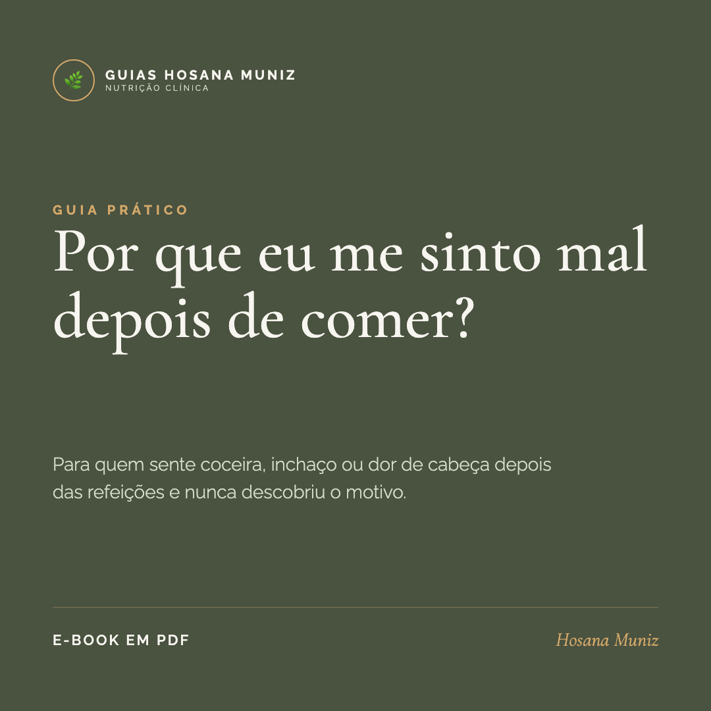

Saúde e digestão
Por que eu me sinto mal depois de comer?
Se você incha, sente a cabeça pesar ou um mal-estar estranho depois das refeições, e os exames deram tudo normal, talvez ninguém tenha olhado pro lugar certo.


Deixa eu começar sendo sincera com você: eu demorei pra entender isso no meu próprio corpo. E olha que eu sou nutricionista.
Por um tempo, eu me sentia mal depois de comer e não sabia explicar. Inchava, ficava com a sensação de estar sempre cheia, vinha uma dor de cabeça do nada, às vezes uma coceira. Eu tinha cortado o que todo mundo manda cortar, e mesmo assim continuava. Os exames de rotina não mostravam nada de errado. E aquela frase que talvez você já tenha ouvido também ficava ecoando: "deve ser frescura, deve ser da sua cabeça".
Não era. E quando eu finalmente entendi o que estava acontecendo, fez tanto sentido que eu precisei escrever pra outras mulheres que passam por isso sem nome pra dar.
A resposta tem um nome: histamina
A histamina é uma substância que está naturalmente presente em muitos alimentos do dia a dia. O nosso corpo também sabe lidar com ela, até certo ponto. O problema é que algumas pessoas processam a histamina com mais dificuldade. Quando ela se acumula, o corpo reage.
E aqui está o detalhe que confunde quase todo mundo: a reação não depende de uma única refeição. Ela depende do acúmulo ao longo do dia. Por isso é tão difícil identificar sozinha. Você come uma coisa num dia e passa bem, come a mesma coisa em outro dia, depois de outras refeições, e passa mal. Aí você acha que está ficando louca.
"Não é a sua cabeça. É o seu corpo somando coisas que você não estava enxergando."
Por que confundem com lactose e glúten
Quando a gente se sente mal depois de comer, os dois primeiros suspeitos são sempre os mesmos: a lactose e o glúten. E eles existem, são reais. Só que muita gente para de investigar aí, troca o leite e o pão, melhora um pouco, mas continua sem entender por que ainda incha, ainda tem dor de cabeça, ainda passa mal.
É que alguns dos alimentos mais ricos em histamina são exatamente aqueles que a gente nem desconfia: queijos mais curados, embutidos, conservas, vinho, alimentos fermentados e até a comida que ficou pronta de um dia pro outro na geladeira. Não é só o que você come. Às vezes é há quanto tempo aquilo foi feito.
Será que é o seu caso?
Eu não posso (e não quero) te dar um diagnóstico por um texto. Mas posso te dizer os sinais que mais aparecem juntos, os mesmos que me fizeram ir atrás:
- Inchaço e desconforto logo depois de comer
- Dor de cabeça que aparece sem um motivo claro
- Coceira, vermelhidão ou nariz entupido fora de resfriado
- Sensação de estômago sempre cheio, digestão arrastada
- Já cortou vários alimentos e mesmo assim continua mal
- Exames de rotina normais, mas o desconforto continua
Se você foi marcando vários na cabeça, não pra se assustar. Pra finalmente entender.
Foi por isso que eu escrevi este guia
Eu reuni tudo o que eu queria ter sabido lá no começo, num material simples, sem jargão, pra você ler e entender de verdade. Sem aquele medo de comer, sem cortar tudo pra sempre. É o passo a passo que eu segui, organizado pra caber na vida real.
- 1O que é a histamina e por que o seu corpo pode estar reagindo a ela.
- 2A lista dos alimentos ricos em histamina que costumam passar despercebidos.
- 3Por que o frescor da comida muda tudo, e como isso pesa no seu prato.
- 4O que observar no dia a dia pra começar a entender o seu limite.
- 5Como montar refeições sem fazer da comida um castigo.

Por que me sinto mal depois de comer?
O guia completo, pra você entender o seu corpo sem susto.
Hosana Muniz
Nutricionista clínica com foco em metabologia e nos casos que costumam passar despercebidos. Atende online, montando planos feitos pra rotina, os sintomas e o corpo de cada pessoa, sem dieta de gaveta.